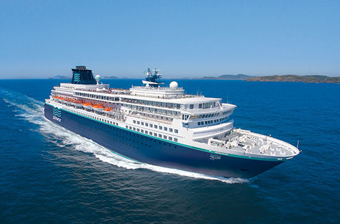
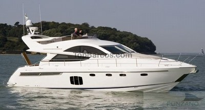
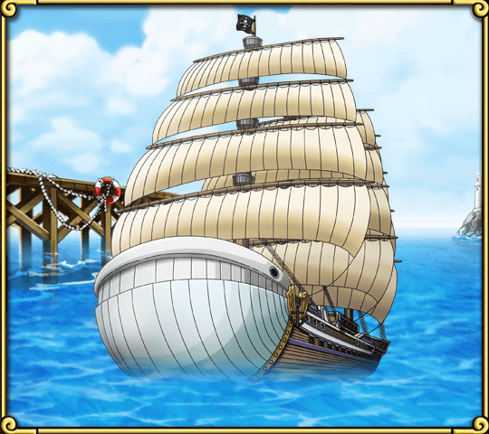
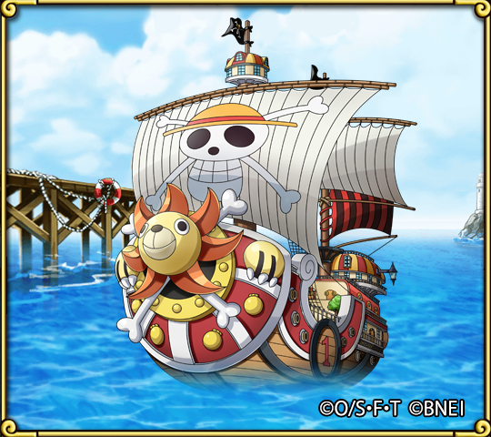
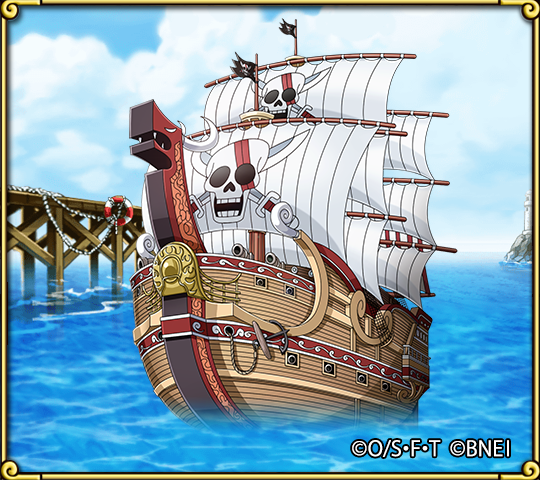

Un barco es un vehículo capaz de flotar en el agua y de trasladarse sobre ella. El concepto alude a la estructura de forma cóncava que suele tener dimensiones amplias y que se utiliza como medio de transporte.
A nivel general, un barco puede ser una pequeña embarcación para un pasajero que se moviliza con remos o un enorme crucero con capacidad para miles de personas y con piscinas, restaurantes, casinos y discotecas. Por eso la noción se puede emplear para aludir a diferentes clases de estructuras flotantes.


BARCOS DE FICCION O ANIMADOS
barcos que estan inspirados en los reales con un toque exagerado con alas, cañones y poder destructivo



BARCOS ESPACIALES Y CRUCEROS ESPACIALES
Barcos en un futuro bastante lejano pero con gran comodidad y poder tanto economico, militar, propio